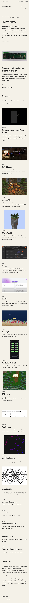

Open live design ↗
Open live design ↗01
First design
The first layout, with a system font, direct headings, and decorative rules removed.
- The same layout, with a system font and a direct introduction.
- The heading names the project. The divider rules and colored accents are gone.
- The project arrangement is unchanged. Filters use plain text.
- The system font and simpler styling continue into the project writeup.
Watch the demo 45 seconds · desktop and mobile
Download the MP4 ↓See the mobile layout
